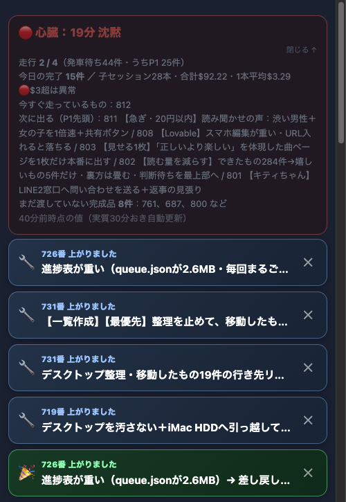
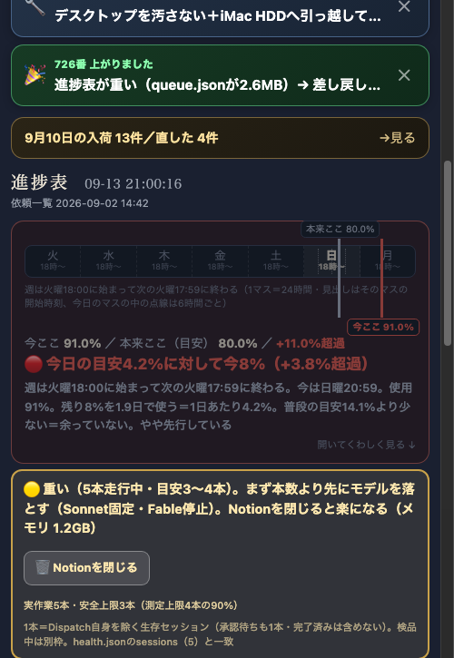

status/now.json(3.49KB)とstatus/rev.txt(20バイトのハッシュだけ)を新設。画面はrev.txtだけを30秒おきに見て、前回と同じなら何もしない。変わった時だけnow.jsonを1回だけ取って、その項目だけ書き換える(スクロール位置は動かさない)。家のMac(中継所)にいる時はSSEで変わった瞬間に届く(遅延1秒未満)。GitHub Pages(スマホ・外出先)はSSEが使えないので自動で30秒ポーリングに落ちる。


| 確認項目 | 結果 |
|---|---|
| 60秒あたりの通信回数(データ不変時) | 前:2本(pace.json+genzaichi.json、無条件で毎回)→後:2本(rev.txtのみ、20B×2) |
| 60秒あたりの通信量(データ不変時) | 前:約3,976バイト→後:約382バイト(実測。ヘッダ込み) |
| ズレの最大幅 | 前:60秒(60秒間隔で無条件更新)→後:GitHub Pages30秒／家のSSE1秒未満(実測:接続200・relay_server.py実測遅延0.48秒) |
| 60秒あたりの再描画回数(データ不変時) | 前:2回(毎回丸ごと書き換え)→後:0回(実測。MutationObserverで確認) |
| 30秒間のスクロール移動量 | 前:保険なし→後:0px(実測。600→600で変化なし) |
| 本番(GitHub Pages)反映 | push済み・index.html/tools/pace.py/tools/relay_server.pyともにorigin/mainと一致 |